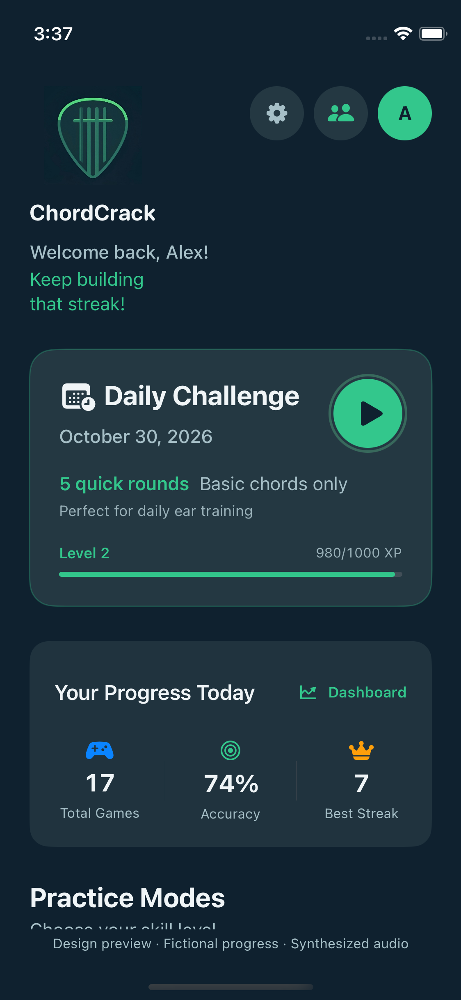
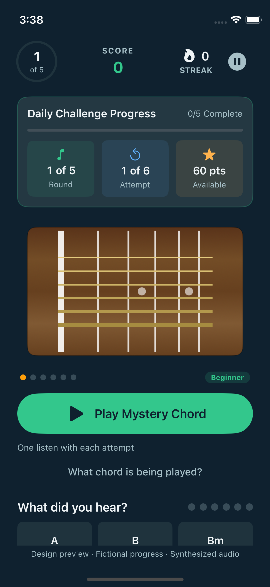
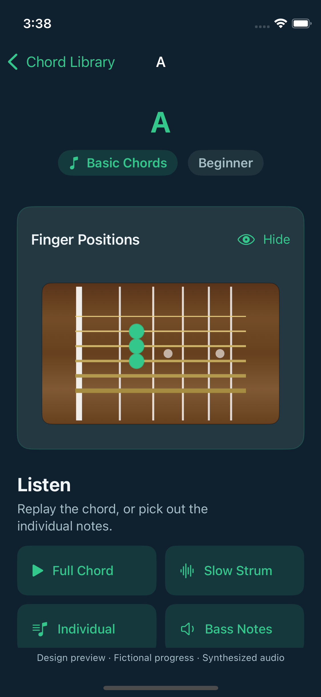

Know that
chord.
Guitar ear training that starts with a listen.
Guess the chord. Get a little better at hearing it.
On the App Store for iPhone & iPad

One note.
A new feeling.
Major and minor chords can be just one note apart. Spot the difference here, then train your ears in the app.
A visual guide. Sound stays in the app.
A major
A major uses C♯. Move that note down one fret to C and you have A minor.
Find your
daily rhythm.
Five rounds is a place to start. Stay for focused practice when you have more time.

Listen closely.
Start with the sound of a guitar chord. No guitar in your hands required.
Take your best guess.
Choose the chord you hear. Slower playback and individual notes can help when you need a hint.
Learn the difference.
Follow your scores and accuracy, or focus on major, minor, power, barre and blues chords.
Get to know
every note.
Go from a familiar sound to a familiar shape. The chord library gives you a place to slow down, look closer and listen again.
- Search and browse by chord category
- See where your fingers go
- Hear a full chord, slow strum or individual notes
Taking practice offline? Download chord audio in Settings before you go. Online account features still need a connection.

A look at what’s next.
The screens on this page are actual iOS development previews with fictional progress. They show work toward the next update, not a new App Store release. We’re also trying a separate five-round major/minor prototype with comparison replay. Check the App Store for the version available today.
Before you
press play.
Have another question?
support@chordcrack.com
Do I need a guitar?
No. ChordCrack trains chord recognition by sound. Your iPhone or iPad is all you need; headphones can help you hear the details.
Where should I start?
Try a five-round Daily Challenge with basic chords. Choose focused practice when you want more time with major, minor, power, barre or blues chords. First-session tips explain listening, hints and scoring, and you can revisit the tutorial in Settings.
How do hints work?
Hints reveal more of the chord through slower playback, individual string sounds and finger positions. Hints cost points, and you can use them when you need a hand. Pause, resume, restart or quit a session from the pause menu.
Can I practice offline?
Download chord audio in Settings while connected and let the download finish before going offline. Cached audio supports practice. Sign-in, friends, leaderboards and cloud updates require internet access.
Can I play with friends?
Add friends by username and compare stats they choose to share. Leaderboard visibility is a separate privacy choice. Practice is individual: there are no live head-to-head matches or shared lobbies.
Is my progress saved?
Practice progress is saved locally, and account features support online stats. Review your scores and accuracy in the app. Online updates require a connection.
How do I report a problem?
Email support@chordcrack.com with your device type, app version and what happened. Settings includes sound, downloaded audio and privacy controls. See our Privacy Policy for details.